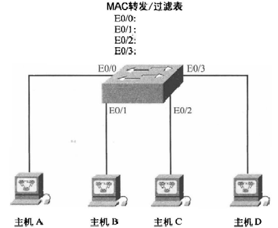

1、集线器
连接到集线器设备特征：
集线器上的所有设备都在同一个冲突域中；
集线器上的所有设备都在同一个广播域中；
集线器上的所有设备共享带宽。
2、交换机
交换机特征：
交换机每个接口都是独立的冲突域；
交换机上所有设备都在同一个广播域中；
交换机上每个接口提供独立带宽。
3、交换机的交换功能
MAC地址学习
帧的转发/过滤
防止交换机环路（STP协议）
4、MAC地址学习

交换机开机时，MAC地址表是空白的。MAC地址表用来保存端口号和MAC地址

如果主机A向主机B发送数据，则：
1）主机A发送数据到交换机的E0/0口；
2）交换机接收到该数据后，把主机A的MAC地址记录在MAC地址表中；
3）由于目的MAC地址不在MAC地址表中，交换机把数据泛洪到除了E0/0口之外的所有接口上；
4）主机B收到该帧，会回复数据给交换机。而主机C和D因为目的地址不是自己，丢弃该数据帧；
5）交换机会记录主机B的MAC地址和所在端口。但是还是不会记录C和D的MAC地址，因为C和D并没有向交换机发送数据；
6）当下次A与B之间发送数据，会直接发送，不再泛洪。
5、帧的转发/过滤
帧转发：如果目的MAC地址已经保存在交换机的MAC地址表中，帧就只被发送到正确的接口，这就是帧的转发。
帧过滤：交换机不会把已知的目的地址的帧发送到其他交换机接口上，保护了其他接口的带宽，这就是帧过滤
广播：如果目的地址在MAC地址表中没有，交换机就向除了发送该数据的端口之外的其他所有接口广播该数据
6、单工、半双工、双工
单工：只有一个信道，传输方向只能是单向的；
半双工：只有一个信道，在同一时刻，只能向一个方向传递；
双工：双信道，同时可以有双向数据传送传递。
二、虚拟局域网（VLAN）
VLAN（virtual local area network）即虚拟局域网，是一种通过将局域网内的设备逻辑的而不是物理的划分成一个个网段从而实现逻辑工作组的技术。
交换机只分割了冲突域，但是不能分割广播域。随着交换机端口数量的增多，网络中广播增多，降低了网络效率，而且一个广播域中，有安全隐患。vlan的出现，让交换机也可以分割广播域了。
2、VLAN的优点
1）广播控制
2）提高了安全性
3）提高了带宽的利用率，降低了延迟
4）灵活性和可扩展性
3、VLAN的分类
1）基于端口划分的静态VLAN；
手工将PC机所连接的交换机接口指定给VLAN，一般都是配置静态VLAN；
2）基于MAC地址划分的动态VLAN
使用VLAN成员资格策略服务器（VMPS）动态根据所接入的PC的MAC地址分配给相应的VLAN。
三、VLAN的实现

两台计算机可以互相ping通
switch#configure teminal
switch(config)#hostname S1
S1#show ip interface brief
Interface IP-Address OK?Method Status Protocol
FastEthernet0/1 unassigned yes manual up up
FastEthernet0/2 unassigned yes manual up up
1）查看VLAN
S1#show vlan
VLAN Name Status Ports
---- -------------------------------- --------- -------------------------------1 default active Fa0/1, Fa0/2, Fa0/3, Fa0/4
Fa0/5, Fa0/6, Fa0/7, Fa0/8
Fa0/9, Fa0/10, Fa0/11, Fa0/12
Fa0/13, Fa0/14, Fa0/15, Fa0/16
Fa0/17, Fa0/18, Fa0/19, Fa0/20
Fa0/21, Fa0/22, Fa0/23, Fa0/24
Gig1/1, Gig1/2
#默认VLAN1是启动的，而且所有的接口都在VLAN1中
S1#vlan 2 #创建VLAN
2）修改VLAN名
S1(config)#vlan 2
S1(config-vlan)#name cangls
S1#show vlan
S1#vlan database #在特权模式下，而不是配置模式
S1(vlan)#vlan 3 name boduols
S1(vlan)#exit #只有exit退出才会生效
4）将端口分配到VLAN中
S1(config)#interface f0/1
S1(config-if)#switchport access vlan 2
S1(config-if)#interface f0/2
S1(config-if)#switchport access vlan 3
5）删除VLAN
S1(config)#vlan 4
S1(config-if)#exit
S1(config-if)#no vlan 4
S1(config)#interface f0/2
S1(config-if)#no switchport access vlan 3 #删除接口的VLAN时，必须先删除接口
S1(config-if)#no vlan 3 #删除vlan
6）操作多个端口
S1(config)#interface range f0/2-5 #操作编号为2至5的接口
S1(config-if-range)#switchport access vlan 2
S1(config)#interface range f0/6,f0/10,f0/15 #操作编号不连续的端口
S1(config-if-range)#switchport access vlan 3
四、VLAN trunk
1、概述

允许多台交换机之间建立VLAN
交换机在每个去往其他交换机的数据帧打上VLAN标识

如果VLAN需要跨交换机，则在交换机上需要给每个数据打入VLAN标记
2、访问链路与中继链路

访问链路：只能承载一个VLAN的数据传输的链路
中继链路：能承载多个VLAN的数据传输的链路
3、VLAN标记的分类
ISL（交换机间链路）：Cisco私有协议

ISL为两头标记，头部为26Byte，尾部为4Byte
其中标记VLAN位数为15位，最多32768个，但是交换机最多能识别4096个VLAN
IEEE 802.1Q：标准协议

总共加入的Tag为4Byte
TPID：协议标记，一般为0x8100标识为IEEE802.1Q类型
Priority：优先级
CFI：格式标识，为0为标准格式
VLAN ID：标记数据帧属于哪个VLAN，共12位（能标识4096个VLAN，0与4096被保留）
4、中继接口模式
开启（on）：将端口设置为永久中继模式（switchport mode trunk）
关闭（off）：将端口设置为永久非中继模式（switchport mode access）
期望（desirable）：让端口主动试图（主动期望）将链路转变成中继链路（switchport mode dynamic
desirabel）
自动（auto）：使端口愿意（被动无所谓）将链路变为中继链路（switchport mode dynamic auto），交换机默认为这种模式。
S1#show interfaces f0/1 switchport #查看端口的模式
5、VLAN trunk实现

S1配置
S1(config)#vlan 10
S1(config-vlan)#interface f0/1
S1(config-if)#switchport access vlan 10 #将端口加入vlan中
S1(config-if)#vlan 20
S1(config-vlan)#interface f0/2
S1(config-if)#switchport access vlan 20
S2配置
S2(config)#vlan 10
S2(config-vlan)#interface f0/1
S2(config-if)#switchport access vlan 10
S2(config-if)#vlan 20
S2(config-vlan)#interface f0/2
S2(config-if)#switchport access vlan 20
配置trunk模式
S1(config)#interface f0/24
S1(config-if)#switchport mode ?
access Set trunking mode to ACCESS unconditionally #永久非中继
dynamic Set trunking mode to dynamically negotiate access or trunk mode #动态协商trunk Set trunking mode to TRUNK unconditionally #永久中继
S1(config-if)#switchport mode dynamic ?
auto Set trunking mode dynamic negotiation parameter to AUTO #自动
desirable Set trunking mode dynamic negotiation parameter to DESIRABLE #期望 S1(config-if)#switchport mode dynamic desirable #将f0/24设置为desirable模式
S1#show interfaces f0/24 switchport #查看f0/24端口信息
S1(config)#interface f0/24
S1(config-if)#switchport trunk allowed vlan remove 10 #在trunk中删除VLAN10
S1(config-if)#switchport trunk allowed vlan add 10 # 在trunk中加入VLAN10
五、VLAN中继协议（VTP）
1、概述
如果有多台交换机，需要给每台交换机配置VLAN非常麻烦，这是可以配置VTP，通过一台VTP服务器维护其他所有交换机的VLAN添加、删除和重命名。
但是客户机只能学习vlan信息，端口号还需要手工添加到不同的vlan中。
2、VTP模式
服务器模式：这是所有交换机的默认模式。只有处于服务器模式的交换机才能在VTP域中创建、添加和删除VLAN，在处于服务器模式下的交换机中对VLAN所作的任何修改都将通告整个VTP域。整个VTP域最少需要一台VTP服务器。
客户端模式：接收来自VTP服务器的信息。
透明模式：于透明模式的交换机不加入VTP域，也不分享其VLAN数据库，而只通过中继链路转发VTP通告。可以让其他交换机通过透明模式的交换机获取VLAN数据库。

3、两台交换机要交换VLAN信息，必须满足如下三项要求：
两台交换机的管理域名相同
其中一台交换机被配置为VTP服务器
VTP密码相同（如果使用了的旗号）
4、配置VTP实验

S1配置
S1(config)#vlan 10
S1(config)#vlan 20
S1(config)#interface f0/1
S1(config-if)#switchport access vlan 10
S1(config-if)#interface f0/2
S1(config-if)#switchport access vlan 20
S1(config-if)#interface f0/24
S1(config-if)#switchport mode trunk
S1(config)#vtp mode server #设置S1为vtp服务器
S1(config)#vtp domain lamp #设置域名
S1(config)#vtp password 123456 #设置vtp密码
S1#show vtp status #设置vtp的状态
S2配置
S2(config)#vtp mode client #设置S2为vtp客户端
S1(config)#vtp domain lamp
S1(config)#vtp password 123456
S1(config)#interface f0/24
S1(config-if)#switchport mode trunk
#经过一段时间S2会学到S1的VLAN信息
六、VLAN间路由
为了让不同的VLAN间能够通信，需要配置VLAN间路由
每个VLAN都是一个独立的子网，最好将VLAN配置为独立子网。

S2配置
S2(config)#interface f0/23
S2(config-if)#switchport trunk encapsulation dot1q #加入IEEE 802.1Q协议
S2(config-if)#switchport mode trunk #连接路由器的交换机接口必须配置为trunk
R0配置
R0(config)#interface f0/0
R0(config-if)#no shutdown
R0(config-if)#interface f0/0.10
#在f0/0上启用逻辑接口（子接口）。逻辑接口号只用于本地管理，可以随便起，最好和VLAN号一致
R0(config-subif)#encapsulation dot1q 10 #给子接口配置VLAN号，并封装为IEEE 802.1Q协议
R0(config-subif)#ip address 192.168.10.254 255.255.255.0
#为子接口指定IP地址和掩码，注意：子接口IP应该是VLAN指定的网关
R0(config-subif)#interface f0/0.20
R0(config-subif)#encapsulation dot1q 20
R0(config-subif)#ip address 192.168.20.254 255.255.255.0
R0(config-subif)#interface f0/0.30
R0(config-subif)#ip address 192.168.30.254 255.255.255.0
R0(config-subif)#encapsulation dot1q 30